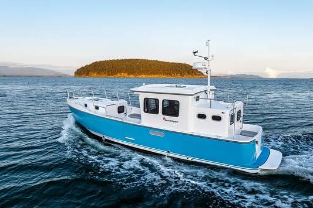

B-Atlas Boat Guide · SEAP-35
SeaPiper 35 Narrow-Beam Long-Range Cruiser
From 2018
The SeaPiper 35 is an unusually narrow long-range pilothouse cruiser designed around an 8 ft 6 in beam, shallow draft and single 85 hp diesel. Its light-commercial aesthetic, separated cockpit/pilothouse/forward-accommodation zones and substantial tankage prioritize efficient low-speed travel and easy berth access over conventional yacht styling.

- LOA
- 35.92 ft
- LWL
- 33.42 ft
- Beam
- 8.5 ft
- Draft
- 2.92 ft
- Hull behaviour
- Displacement
- Fuel
- Diesel
- Propulsion
- Shaft
- Engine configuration
- Single Beta Marine 85 hp diesel
- Boat family
- Trawler
- Construction
- Fiberglass
Best for
- Couples prioritizing range, narrow beam and efficient inland/coastal cruising
- Owners who value simple workboat-inspired systems and protected pilothouse operation
- Routes where slip width or bridge clearance matters
Trade-offs
- Narrow beam limits interior width and form stability compared with beamy trawlers
- Cruising speed is approximately 7–9 knots
- Distinctive utilitarian layout may not suit buyers wanting one open continuous salon
Known concerns
- No model-specific concern has been promoted to B-Atlas’s evidence threshold. This does not mean the model has no age-, condition- or hull-specific risks.
Inspection focus
- Verify hull-specific build specification and any production changes
- Inspect aluminum/stainless fittings, windows, sliding doors and deck penetrations
- Inspect Beta diesel cooling, exhaust, shaft, rudder and fuel systems
- Verify tank installation, fuel transfer and sanitation systems
- Test electrical, inverter/charging and optional comfort systems
Continue researching
Related boat models
Endeavour TrawlerCat 36 Power Catamaran
36 ft · Displacement
Cheoy Lee 36 Trawler Trawler
36 ft · Semi-Displacement
Island Gypsy 36 Classic Classic
36 ft · Semi-Displacement
Island Gypsy 36 Europa Europa
36 ft · Semi-Displacement
Marine Trader 36 Double Cabin
36 ft · Semi-Displacement
Monk 36 Trawler
36 ft · Semi-Displacement
About this record
B-Atlas preserves uncertainty: missing information remains unknown rather than being treated as a negative. Specifications and guidance describe the model record; individual boats can differ by year, equipment, refit and condition.